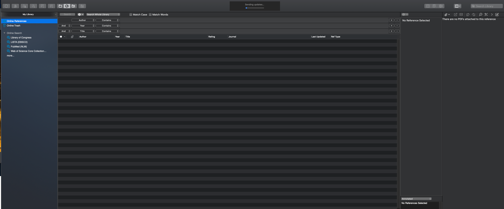
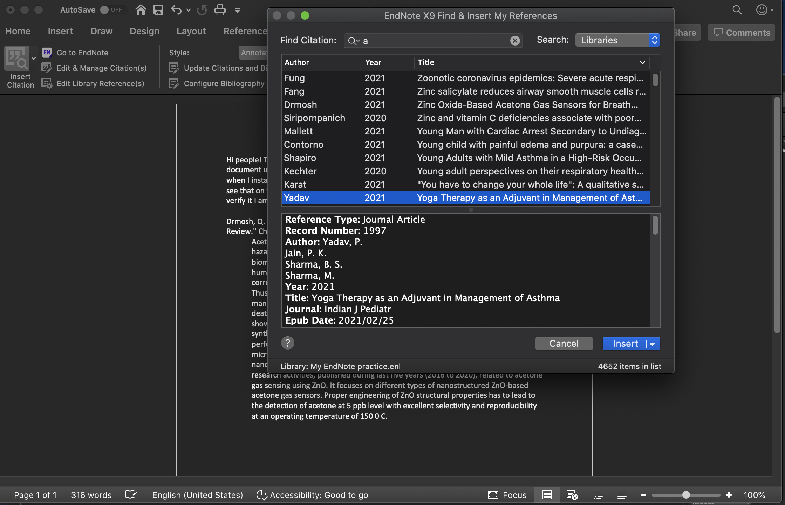
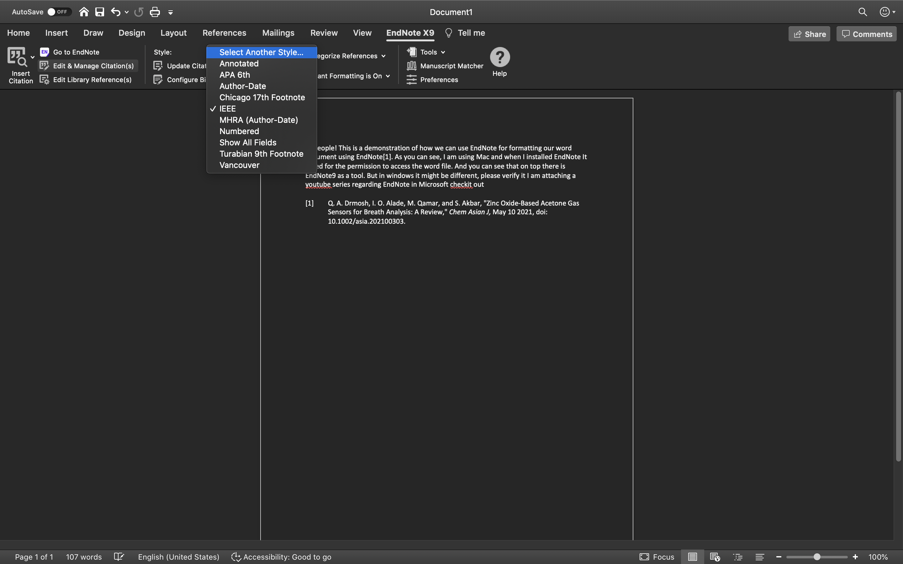
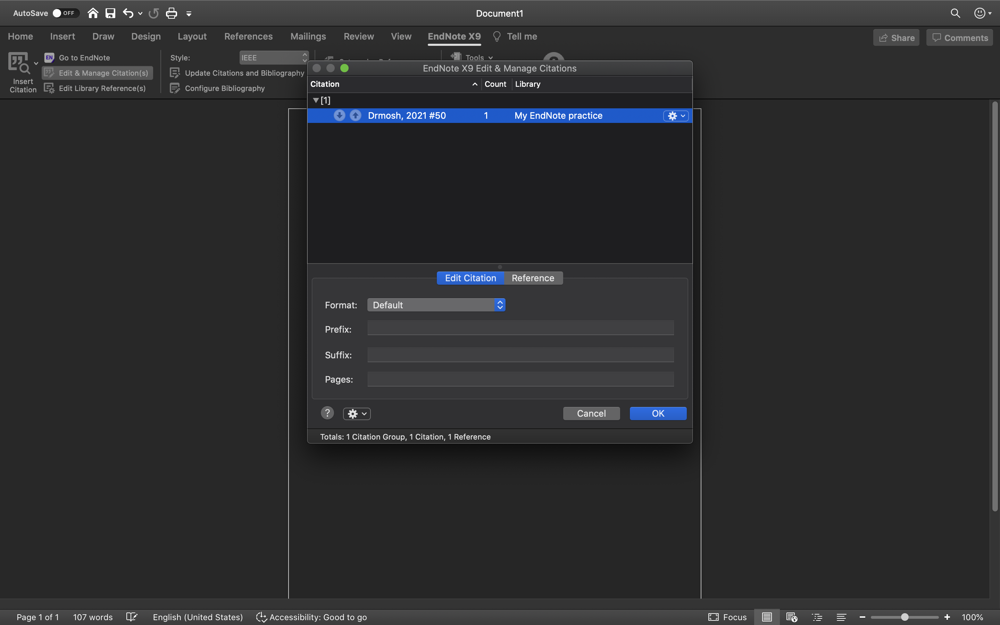
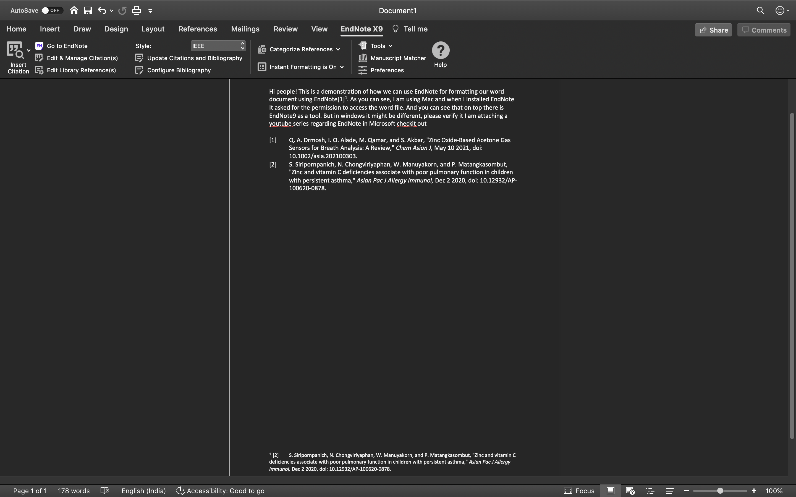

I have been thinking of using a paper management tool since the day I seriously started reading papers. I came across, or been told of using many and when I stared using those realised that they are expensive( there are some opensource tools as well) but I felt like too overwhelming and I stopped digging more deeper in to that.
Now the time has come and now there is no escape. My university is providing EndNote tool, and I have been told that it is awesome, as it is given free we have to use them right? 😁
That being said, This blog ( may be more of these) will be my learning experience with EndNote. We will be demystifying about what,why and how of this. Also, I have not used any other tools and I am no one to comment how good this one over others, but if you think there are any other tools which is significantly better then please let me know.
EndNote
This is how it looks when you open it.
So we have lot of databases where we can search what we wan to and group then according to our uses cases so that we will not lose them.
Let us understand what we see on the picture..
First of all go to file and create a new library assume that this is your play ground of study. And that will bring you the the same image that you see on top.
This is the home page, on the left you can see that there are lot of libraries available that you can search through. The issue is that if you don’t have access to them you will not be able to retrieve the data. In the middle you can put the queries on top and hit the search button and it will retrieve the results below that. And if you want to see the pdf of that you can select it and it the pdf icon ( on the top bar the fourth one) and it will retrieve the pdf if available or will share the link to the same where we can get it. Amazing right?? 😉
Moving forward assume that you found 4 interesting journals that is what exactly you were looking for what will you do right now? Now you can right click on them and group them based on the context. So whenever you need them you can select the group and learn. Hence, we are keeping track of things that we are using 😎
How to use EndNote in Microsoft Word
Now we can look into how EndNote can interact with microsoft word and help in formatting and citation. As you can see, I am using Mac and when I installed EndNote It asked for the permission to access the word file. And you can see that on top there is EndNote9 as a tool. But in windows it might be different, please verify it I am attaching a youtube series regarding EndNote in Microsoft check it out.
- Adding a citation from EndNote Library
Put the cursor on where you want to insert the citation and click on EndNote Tool and do the insert citation. Search the paper that you want to insert and select ( if you are doing it for the first time you might have to select the library first). Not only it will insert the citation but also it will start the bibliography at the bottom.
- Changing the format of the word
Go to the style part of the EndNote tool in word and change the style according to the way that you want.

- Editing the citation
If you want to add the custom citations by yourself, you can make the changes by selecting the edit&manage citations and doing the adding the prefix and suffix for the citations (Feel free to checkout the other features too😉)

- Adding citation as a footnote
To do this first you have to select the first select the references-> insert footnote then go to EndNote. Select the citation that you want to add from insert your citation and it will add as a footnote. It will also add the upper script to the text and will be added to the bibliography that has been generated
And here comes the end to this small blog. In the next blog I will be discussing How we can use EndNote for reading research papers and preparing Notes more effectively
Till then happy learning🖐👋🖐👋🖐👋